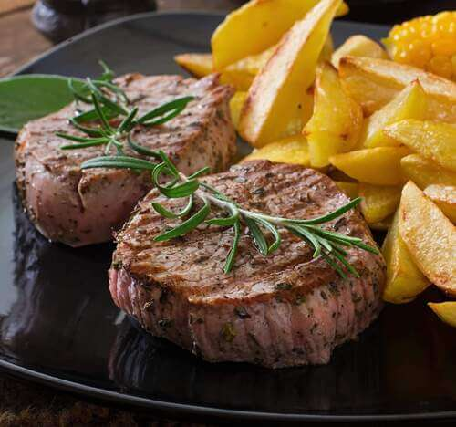

¡QUE LOMO!
La receta fácil y deliciosa para preparar un clásico de la cocina casera. Aprende a cocinar el lomo
perfecto con una salsa cremosa de pimienta, siguiendo esta receta detallada y sencilla. Descubre cómo
obtener un corte tierno y jugoso, y el secreto para conseguir una salsa con el equilibrio perfecto entre
sabor y cremosidad. Sorprende a tu familia y amigos con este plato clásico y elegante, perfecto para una
cena especial en casa. ¡No te pierdas esta deliciosa receta casera de lomo a la pimienta!